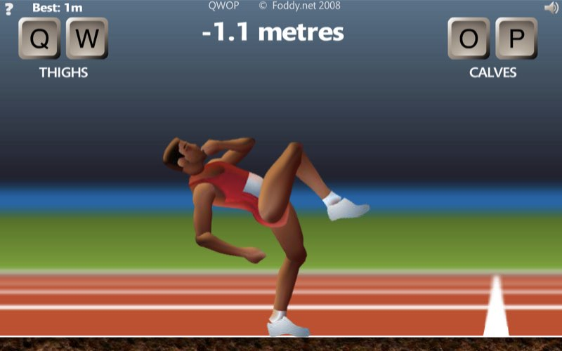

September 3, 2020
Python
Genetic algorithms are a Darwinian-inspired method finding optimal, or near-optimal, solutions to complex problems. Mirroring natural selection, a population of potential solutions is generated and then repeatedly combined and mutated at a variable rate corresponding to their fitness at solving the problem. Solutions that are more fit for solving the problem will be more likely to produce offspring, resembling their parents and hopefully have inherited traits promoting a high fitness as well. Over time, the overall fitness of the population should increase, becoming more adapted to solving the problem, with front running solutions closing in on optimality. Though this method was framed after our observations of evolution in natural populations, when thinking about methods for population structuring, mating, combining traits, and so forth, we are not entirely limited to staying within the bounds of what actually occurs in nature. With that in mind, there are so many different ways to alter this algorithm to better match the problem you are trying to solve. In this post, we are going to discuss just a few examples of very simple genetic algorithms that can illustrate their usefulness across many applications.
My favorite visual example of a genetic algorithm in action is BoxCar2D. In this simulation, cars are randomly generated using variations on 22 different traits that control body shape, wheel number and size, and the general configuration of the car. Cars are driven automatically down a side scrolling track, and the fitness of the car is measured as the distance that it makes it down the track before coming to a stop.
The starting population of a genetic algorithm is generally pretty terrible at solving the problem as their traits are all randomly generated. In the BoxCar2D example, some of the cars in the first generation do not have any wheels and, therefore, have no chance at making it down the track. The most important aspect of the starting population is that it has a variety of traits that can be compared with one another. Bad traits, such as a lack of wheels, will be weeded, and good traits will have greater representation in future generations. But if you start with a population that is either too small or lacks diversity, you are less likely to find the optimal solution.
Let’s start with the very simplest version of a genetic algorithm following these steps:
1) Create a random population
2) Measure the fitness of each individual
3) Breed and mutate to create the next generation
4) Repeat Steps 2 and 3
We will have a population of 1000 individuals, each with two continuous traits with random values between -10 and 10. These traits are abstract, but you can think of them as measurements about the mean of something like limb length and torso length for an imaginary hominid species. We are going to look at only two traits to start with because they can be visualized very easily in an xy-plane.
To measure the fitness of each individual, we will need to have a goal that we are looking to achieve. Establishing the correct goal is the most critical part of a genetic algorithm. If you are not specific enough, the algorithm may discover a loophole that completes the specified goal but does not exhibit the behavior that you were hoping for. This misalignment may alter the solution applicability to other scenarios and ultimately limit the effectiveness of the genetic algorithm.
For example, there is a very popular ragdoll browser game called QWOP where you are controlling an athlete running the 100m Dash. QWOP greatly limits your controls of the runner to just four buttons (Q, W, O, and P) which control the right and left thighs and right and left calves, respectively. At the start of the race you need to time your movements of the athletes legs to get them to run without tripping, but any misclick or falter in timing could result in you flipping backwards and falling over, ending the game. So you think to yourself, I want to train a genetic algorithm to beat this game. You code up everything necessary for your algorithm to run and decide to measure the fitness of each runner in your population as the distance that they were able to run before falling over. At its surface, this fitness function achieves your goal of beating the game, but as your population evolves you find that the solution that the population is converging towards looks less like running and more like sliding the athlete’s knees along the ground while inching slowly to the finish line. While the latter method can technically beat the game, is it what you wanted? If yes, then you can continue evolving the algorithm until it no longer improves. But if not, then what ways could we improve the fitness function to disincentivize the sliding strategy. By including a time component into the fitness function, you may be able to prevent the development of slower runners, including those that use the sliding strategy.
As the fitness function becomes more complicated, the evolutionary process also becomes more complex. As the algorithm is searching for optimality, it is more likely to become caught at a local optimum rather than the global optimum. All of this needs to be considered when developing a fitness function, but is not necessary in our simple example.
In our genetic algorithm, we are going to set a specific combination of traits as the most optimal; let’s say 0 and 0. Normally, we would not know the optimal combination (because why then would we be using a genetic algorithm if we already know), but as this scenario does not have an associated simulation like the BoxCar2D and QWOP tracks, we need to set the optimal manually. The fitness of each individual will then be measured as the euclidean distance between the individual’s traits and the optimal traits. Within the xy-plane, I've added a gradient background based on the fitness of that combination of traits; lighter green corresponds to higher fitness and black corresponds to lower fitness.
An individual’s fitness is then used to determine how likely they are to have offspring in the next generation. Individuals with higher fitness will be more likely to be selected to parent offspring than those with lower fitness. As the size of the population is held constant over generations, there are only a limited number of offspring possible, so competition is high.
genetic-algorithm.py
def breed(self):
parent_pool = []
for i in self.individuals:
for p in range(round(i.fitness*10)*round(i.fitness*10)):
parent_pool.append(i)
new_pop = []
for n in range(self.n_indiv):
parent_1 = parent_pool[random.randint(0, len(parent_pool)-1)]
parent_2 = parent_pool[random.randint(0, len(parent_pool)-1)]
traits = []
for t in range(self.n_traits):
if random.uniform(0, 1) < self.m_rate:
traits.append(random.uniform(self.r_traits[0], self.r_traits[1]))
else:
if random.uniform(0, 1) < 0.5:
traits.append(parent_1.traits[t])
else:
traits.append(parent_2.traits[t])
new_pop.append(Individual(n_traits=self.n_traits, r_traits=self.r_traits, traits=traits))
return Population(n_indiv=self.n_indiv, n_traits=self.n_traits, r_traits=self.r_traits, m_rate=self.m_rate, individuals=new_pop)
Above is the code for selecting two parents to breed based on their individual fitness levels. When two individuals are bred together, there is a 50% probability of the trait value being passed from either parent. There is also a small probability for a mutation of a trait to occur, in which case, the offspring’s trait value would instead be a random number between -10 and 10, ignoring the parent’s trait values. Mutations are important to maintain diversity in the population, especially because there is significant inbreeding within the small population. For this algorithm, mutation rate remains constant over the course of the evolution. Through breeding, the next generation is filled and the process starts again with determining the fitness of all the new individuals.
We can watch as the population trait values converge onto the optimum with each generation. Each blue dot represents an individual in the population. Over time, dots become concentrated around the center of the graph, with faint cross shape due to the method of heredity used for this specific algorithm. At a certain point, the diversity of the population has decreased so much so that improvements to fitness are insignificant from generation to generation. For a more complex scenario, you may want to let it run hoping that a new mutation might help reinvigorate the evolutionary process. Additionally, you could restart the process entirely to see if it once again converges on a similar trait combination. For this simple scenario, both of these methods would not yield further insight because of how regular the fitness landscape is.
In future blog posts, I may look into further modifications of this algorithm, such as what happens when your optimum is not constant over time or density dependent fitness functions.
All of the code used in this post can be found HERE. If you enjoyed this tutorial and want to use this code in your own project, give the repository a star on GitHub and fork the project to your own profile. If you have any questions, create an Issue for the GitHub repository and I will do my best to help!
Pomona, California
|
kitchensjn@gmail.com
|
(804) 572-3197